Fungsi obligasi dan surat berharga
Kelompok fungsi untuk menghitung harga, imbal hasil, bunga berjalan, dan kupon obligasi serta surat utang jangka pendek.
=PRICE(penyelesaian; jatuh_tempo; kupon; imbal_hasil; penebusan; frekuensi)
| penyelesaian | Tanggal transaksi |
|---|---|
| jatuh_tempo | Tanggal obligasi jatuh tempo |
| kupon | Suku bunga kupon tahunan |
| imbal_hasil | Imbal hasil tahunan |
| penebusan | Nilai tebus per nominal 100 |
| frekuensi | 1 = tahunan, 2 = semesteran, 4 = kuartalan |
Langkah praktik
- PRICE: harga per nominal 100. YIELD: imbal hasil dari harga.
- ACCRINT dan ACCRINTM: bunga berjalan.
- COUPNUM, COUPNCD, COUPPCD, COUPDAYS: jumlah dan tanggal kupon.
- TBILLEQ, TBILLPRICE, TBILLYIELD: surat utang jangka pendek.
- Gunakan tangkapan layar di bawah untuk melihat isi argumen tiap fungsi.
Tips
Tanggal pada fungsi ini harus diisi dengan DATE(), bukan teks.
Tangkapan layar praktik
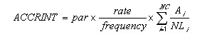
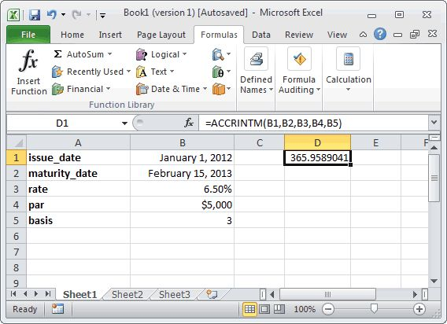
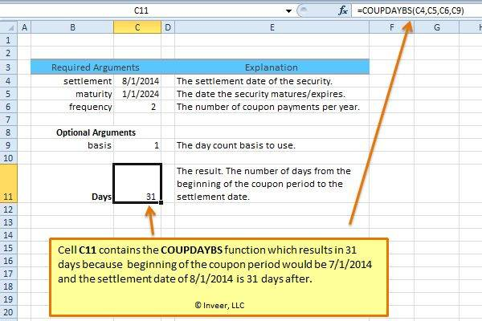
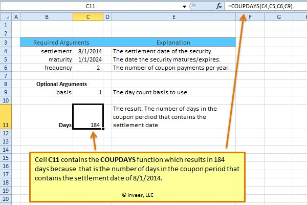
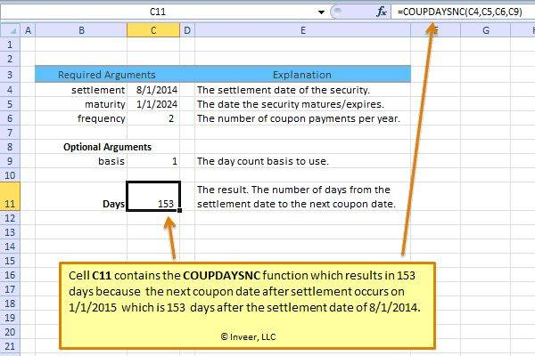
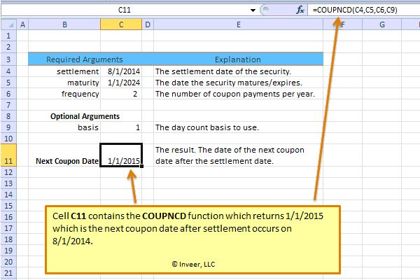
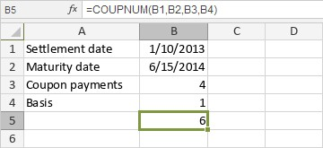
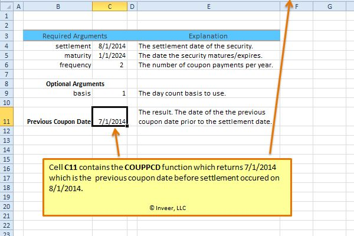
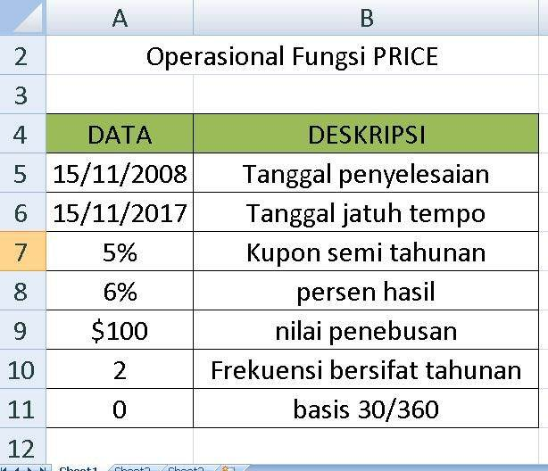
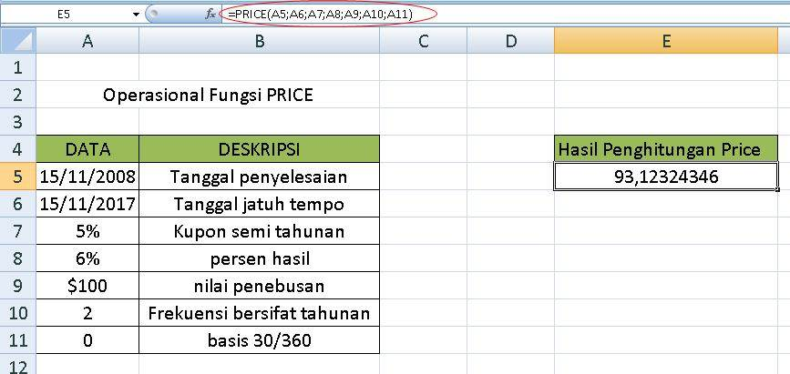
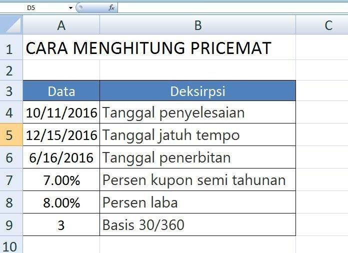
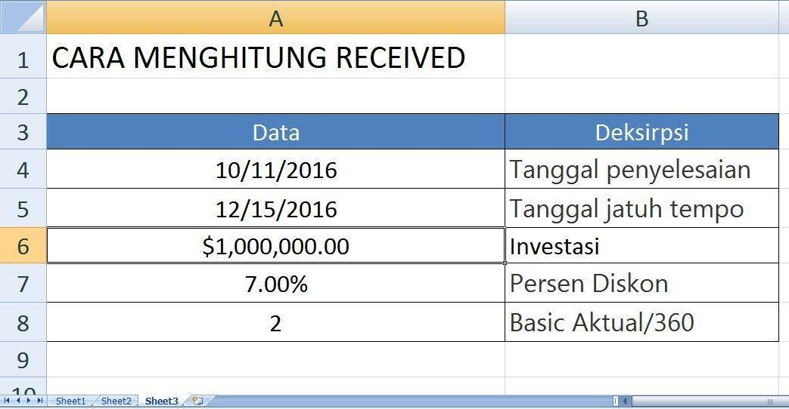
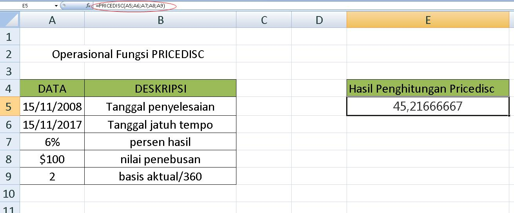
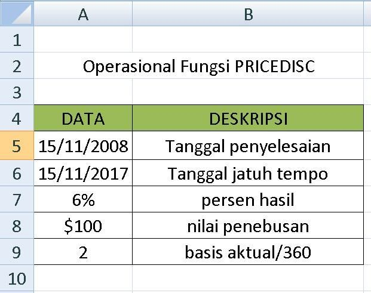
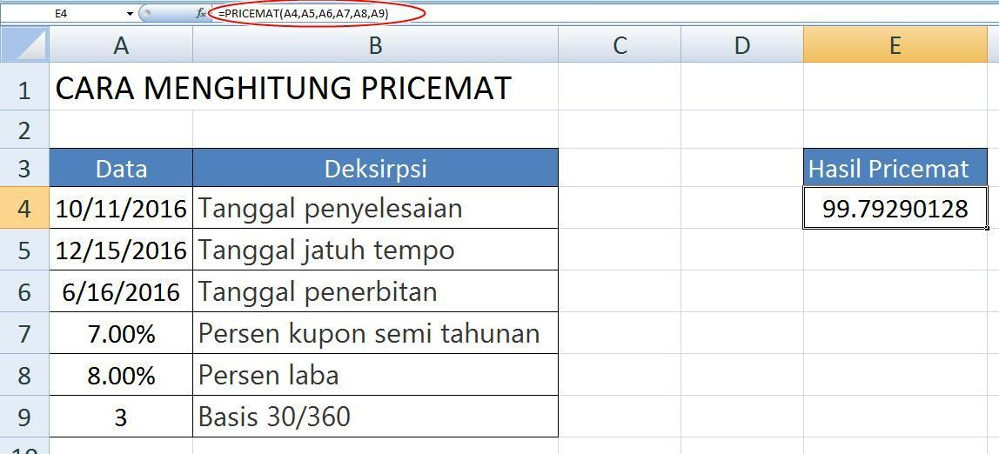
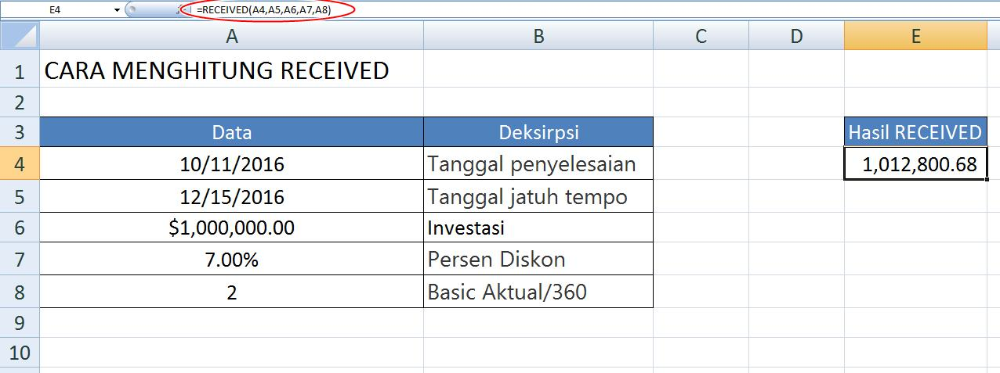
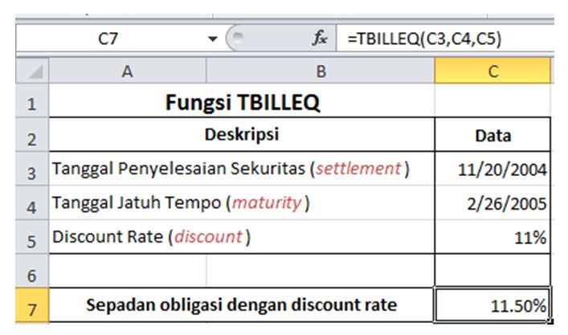
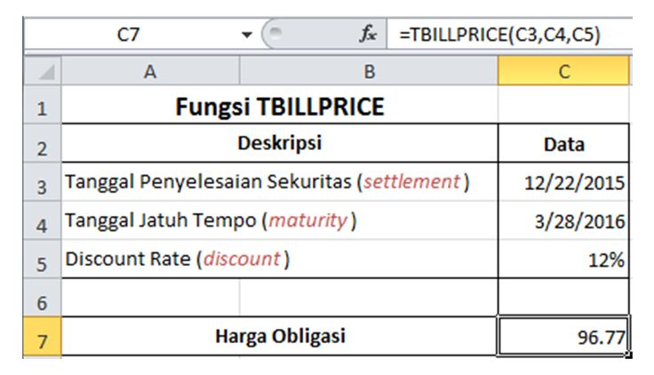
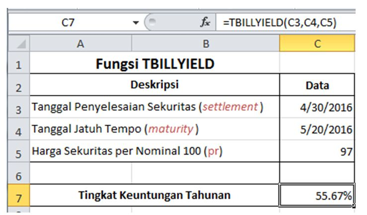
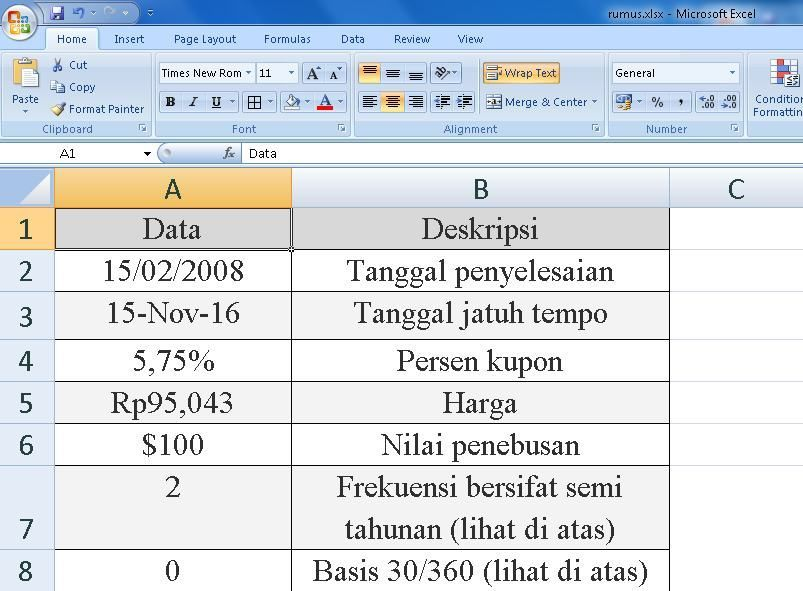
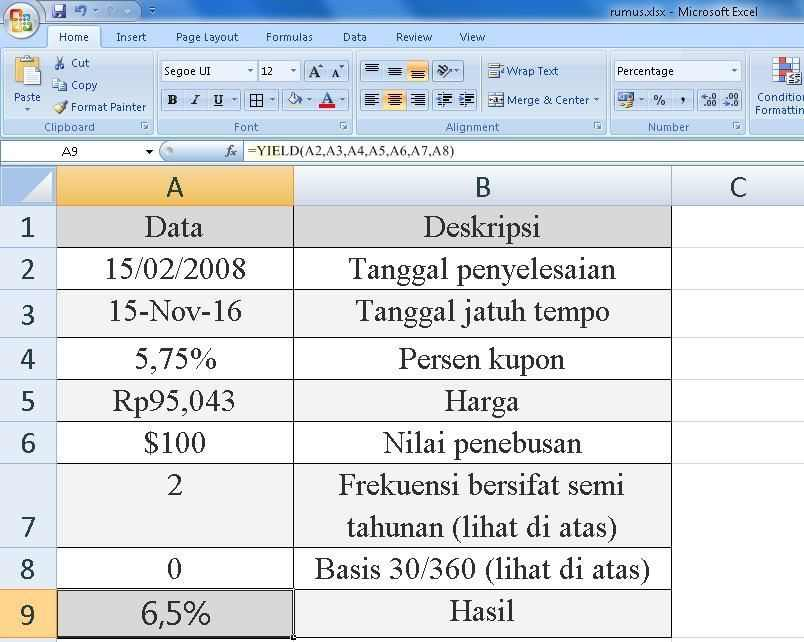
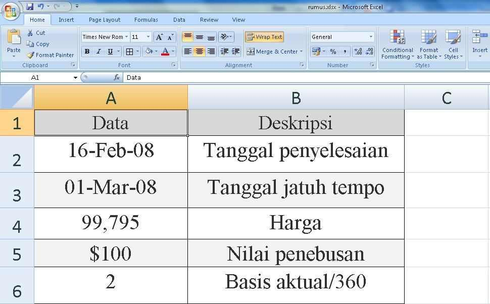
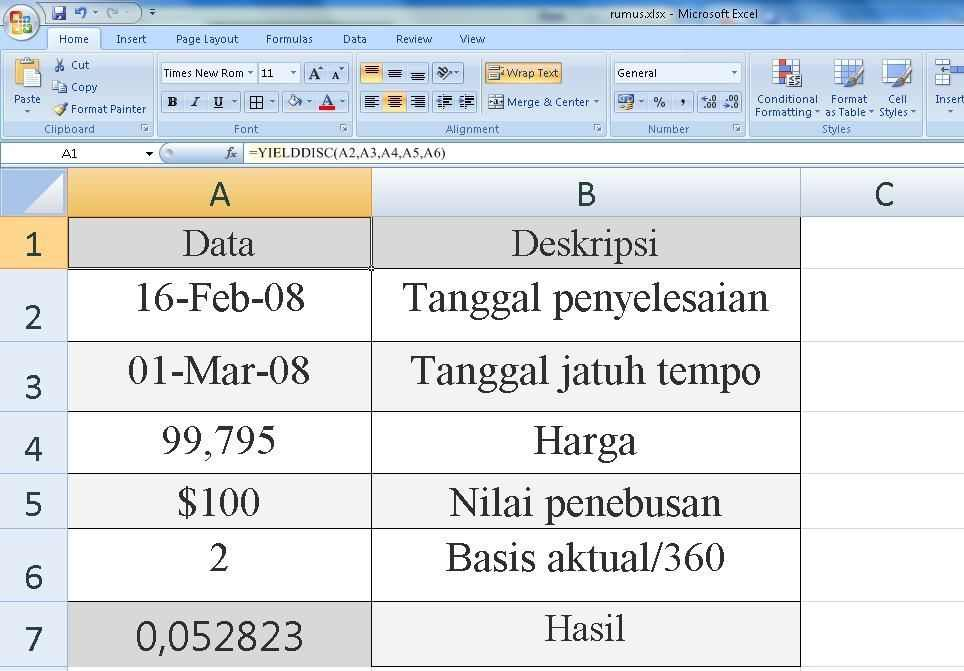
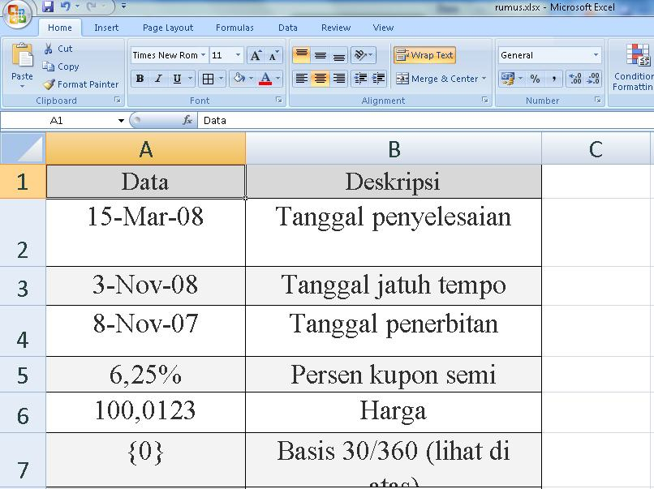
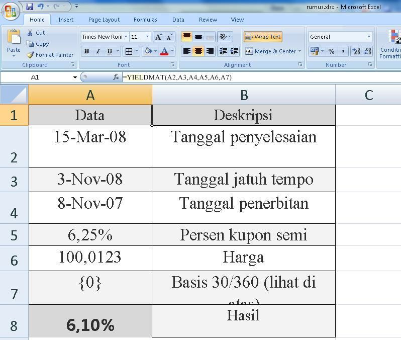